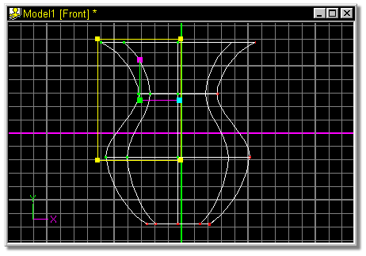
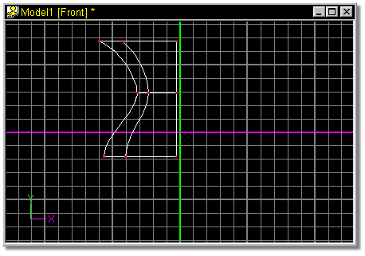

The number of splines that make up a figure can become confusing very quickly,
making it difficult to distinguish one curve from another.
To hide the nonessential splines, group the essential ones then click the Hide
button. Both control points of each spline to be hidden/visible must be
grouped. The Hide button will remain depressed while any splines are hidden.
More control points can be hidden by grouping them and pressing the <Shift>
key while clicking the Hide button.
To turn off Hide and make all splines visible, simply click the Hide button.
The default keyboard shortcut key for Hide is H.
Use one of the grouping methods to group the essential control points.
Remember that the points that are grouped are the ones that will remain visible.

Press the Hide button.
The result:

Related Topics:

Attaching Control Points
Detach Point
Break Spline
Delete Control Point
Insert Control Point
Peak
Magnitude
Bias
Group Mode
Lasso Mode